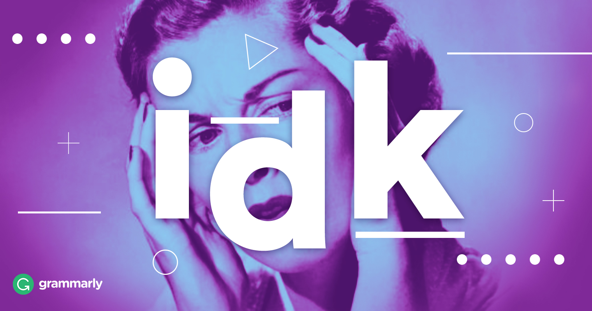
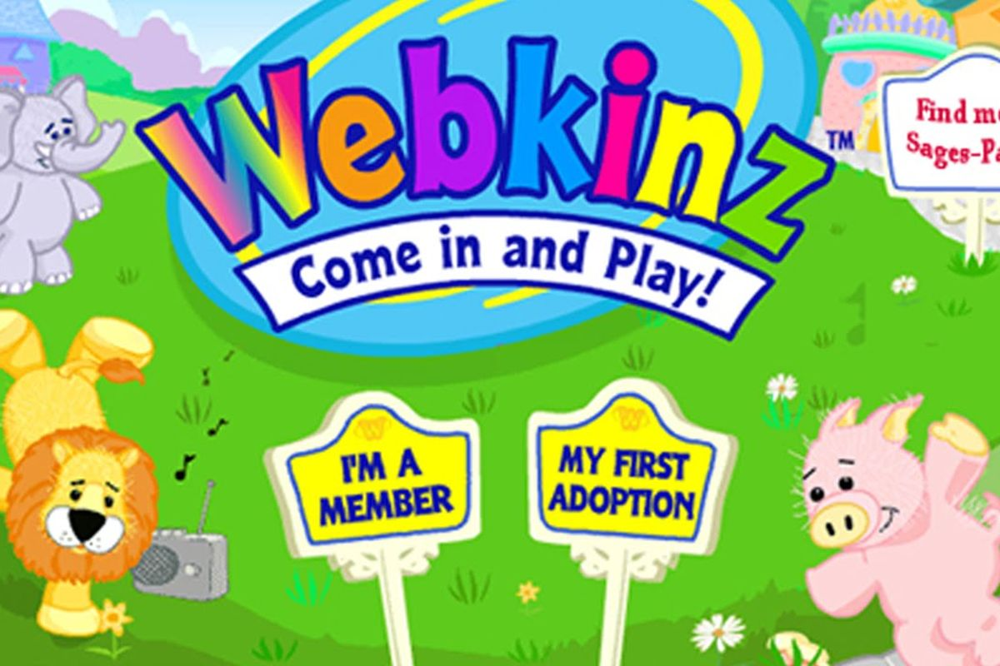

All About Me
Where are you from?
Illinois
When is your birthday?
July 23
Why did you choose to study Communication Design?
I learned how to use Adobe Creative Suite through classes and clubs in high school and realized I wanted to continue learning further
What are you most inspired by?
Artists on Instagram and my daily commute
What has been your favorite class so far? Why?
Core Studio Typography because it was refreshing to finally start my major after foundation year and I was proud of the work I created in the class
What are you hoping to learn in this class?
How to make more interactive and engaging designs, how to be more confident in coding
What do you like to do in your spare time?
Eating good food with friends
When you imagine a graphic designer, what do you think they do on a day to day?
Bringing client's visions to life and consistently collaborating with other designers
When you imagine a developer, what do you think they do on a day to day?
Bringing ideas to life through coding
Where do you see yourself after graduating? What kind of job do you want to have?
Not sure yet, but for now I am interested in branding and editorial

Do you consider yourself an artist, a designer, both, or neither?
Both
What kind of design classes have you taken before this one?
Typography and Creative Computing
Do you know most of the students in our class already?
No
List your favorite typefaces.
What are you top 3 favorite colors?
Which artists do you like?
Collage artists, embroidery artists, and artists that have an interesting color palette
List out some music that you like to listen to
Daniel Caesar, Coldplay, and Joji
Did anything interesting happen over winter break?
My flight back home got delayed 8 hours 30 minutes before boarding
Have you ever built a website?
Not a complete, formal website
Do you have any questions for me?
No
What is your first memory of using the internet?
Playing Webkinz and Tetris

Do you have a favorite place to visit?
Seoul, South Korea
Do you speak any other languages?
Korean and high school level Spanish
What is your favorite food?
Any type of noodles
What is your favorite animal?
Kangaroos
Is there any other information you’d like me to know?
No